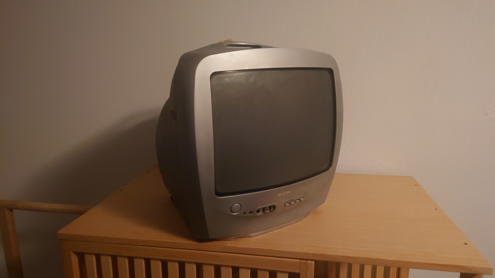
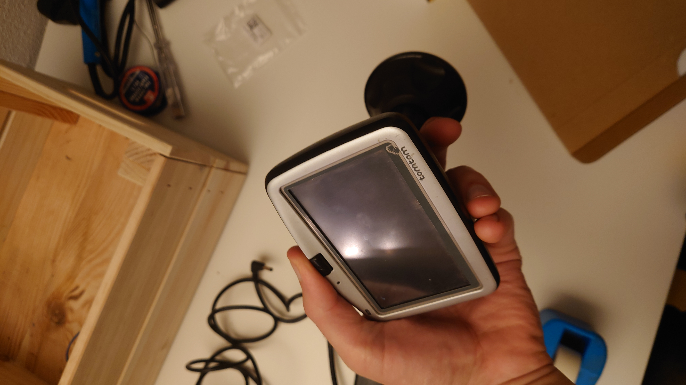
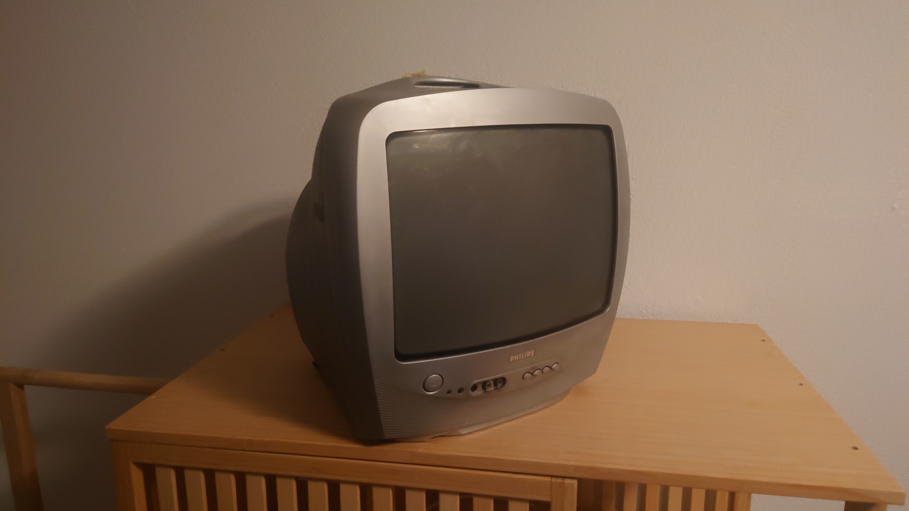
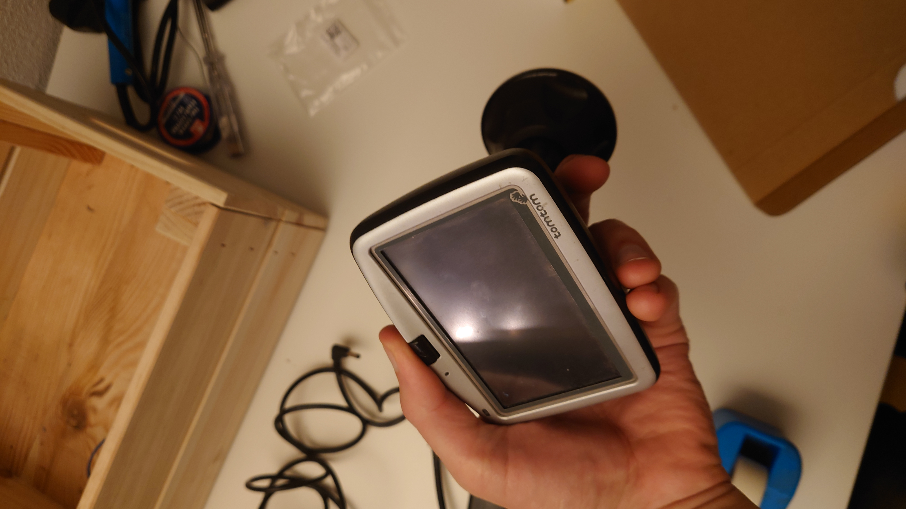

Recenly I have been looking out for some old technology on the brink of being thrown away. Below you can find some images of what I have found:
Old CRT TV
TomTom device

Retro technology
Recenly I have been looking out for some old technology on the brink of being thrown away. Below you can find some images of what I have found:
Old CRT TV
TomTom device